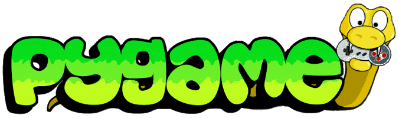
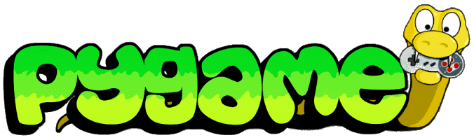

- Rappresenta un oggetto fisico o un concetto del dominio
- Memorizza il suo stato interno in campi privati
- Incapsulamento (black box)
- Offre un insieme di servizi, come metodi pubblici
- Realizza un tipo di dato astratto (ADT)
 
Michele Tomaiuolo
Ingegneria dell'Informazione, UniPR


_ per i nomi dei campi privatiSiamo tutti adulti consenzienti. (GvR)
class Ball:
def __init__(self, x: int, y: int):
self._x = x
self._y = y
self._dx = 5
self._dy = 5
self._w = 20
self._h = 20
# ...

__init__: metodo inizializzatoreself: primo parametro di tutti i metodiball = Ball(40, 80) # Allocation and initialization
ARENA_W, ARENA_H = 320, 240
class Ball:
# ...
def move(self):
if not (0 <= self._x + self._dx <= ARENA_W - self._w):
self._dx = -self._dx
if not (0 <= self._y + self._dy <= ARENA_H - self._h):
self._dy = -self._dy
self._x += self._dx
self._y += self._dy
def rect(self) -> (int, int, int, int):
return self._x, self._y, self._w, self._h
from p3_ball import Ball # Ball is defined in p3_ball.py
# Create two objects, instances of the Ball class
b1 = Ball(40, 80)
b2 = Ball(80, 40)
print('Ball 1 @', b1.rect())
print('Ball 2 @', b2.rect())
while input() != 'x':
b1.move()
b2.move()
print('Ball 1 @', b1.rect())
print('Ball 2 @', b2.rect())
self (per convenzione)selfb1 = Ball(40, 80)
b1.move()
b1 = Ball(40, 80) # also, automatically call
# Ball.__init__(b1, 40, 80)
Ball.move(b1)
Nota. Meglio usare la prima notazione, che evidenzia l'oggetto anzichè la classe!
import game2d as g2d
from p3_ball import Ball
def update():
g2d.canvas_fill((255, 255, 255)) # BG
b1.move()
b2.move()
g2d.draw_rect((127, 127, 127), b1.rect()) # FG
g2d.draw_rect((127, 127, 127), b2.rect()) # FG
b1 = Ball(40, 80)
b2 = Ball(80, 40)
g2d.canvas_init((ARENA_W, ARENA_H))
g2d.set_interval(update, 1000 // 30) # Millis
import game2d as g2d
from p3_ball import Ball
def update():
g2d.canvas_fill((255, 255, 255)) # BG
for b in balls:
b.move()
g2d.draw_rect((127, 127, 127), b.rect()) # FG
balls = [Ball(40, 80), Ball(80, 40), Ball(120, 120)]
g2d.canvas_init((ARENA_W, ARENA_H))
g2d.set_interval(update, 1000 // 30) # Millis

class BallArena: # ...
def __init__(self):
self._balls = []
def add(self, b: Ball):
self._balls.append(b)
def move_all(self):
for b in self._balls:
b.move()
arena = BallArena()
arena.add(Ball(40, 80)); arena.add(Ball(80, 40)) # ...
arena.move_all()


Actor: classe basemove ecc.Actorclass Actor:
def move(self):
raise NotImplementedError("Abstract method")
class Arena: # ...
def __init__(self, w, h):
self._w, self._h = w, h
self._actors = []
def add(self, a: Actor):
self._actors.append(a)
def move_all(self):
for a in self._actors:
a.move()
def size(self):
return self._w, self._h
Arena riutilizzabile creando nuove classi derivate di Actor
arena.add(Ball(40, 80))
arena.add(Ghost(120, 40)) # ...
arena.move_all()
Arena e gli oggetti Actor che contieneBall e Ghost) e classe base (Actor)class Ghost(Actor): # ...
def move(self):
dx = random.choice([-5, 0, 5])
dy = random.choice([-5, 0, 5])
self._x = (self._x + dx) % ARENA_W
self._y = (self._y + dy) % ARENA_H
class Ghost(Actor):
def __init__(self, arena, x, y):
self._x, self._y = x, y
self._arena = arena # save a ref to the arena
arena.add(self) # register yourself into the arena
def move(self):
dx = random.choice([-5, 0, 5])
dy = random.choice([-5, 0, 5])
arena_w, arena_h = self._arena.size() # self._arena!
self._x = (self._x + dx) % arena_w
self._y = (self._y + dy) % arena_h

import game2d as g2d
from bounce import Arena, Ball, Ghost, Turtle
def update():
arena.move_all() # Game logic
g2d.canvas_fill((255, 255, 255)) # Background
for a in arena.actors():
x, y, w, h = a.rect(); xs, ys = a.symbol()
# Foreground; cut an area from a larger image
g2d.image_blit(sprites, (x, y), area=(xs, ys, w, h))
arena = Arena(320, 240)
Ball(arena, 40, 80); Ball(arena, 80, 40); Ghost(arena, 120, 80)
turtle = Turtle(arena, 80, 80) # each actor knows the arena
g2d.canvas_init(arena.size())
sprites = g2d.image_load("sprites.png")
g2d.set_interval(update, 1000 // 30) # Millis
def keydown(code):
# print(code)
if code == "ArrowUp":
turtle.go_up()
elif code == "ArrowDown":
turtle.go_down()
elif code == "ArrowLeft":
turtle.go_left()
elif code == "ArrowRight":
turtle.go_right()
def keyup(code):
turtle.stay()
g2d.handle_keyboard(keydown, keyup)


Arena...collide di entrambi gli oggettiself e personaggio other (secondo parametro)class Ball(Actor):
# ...
def collide(self, other):
if not isinstance(other, Ghost):
x, y, w, h = other.rect()
if x < self._x:
self._dx = self.SPEED
else:
self._dx = -self.SPEED
# ... same for y
isinstance(obj, cls)obj è istanza della classe clsboolclass Ball:
@property # a getter for the pos property
def pos(self) -> (int, int):
return self._x, self._y
# @pos.setter # if you also really need a setter
# def pos(self, val: (int, int)):
# self._x, self._y = val
ball = Ball(40, 80)
print('ball @', ball.pos)
# ball.pos = (60, 20) # with the setter, you could change the pos


import pygame
pygame.init() # Prepare pygame
screen = pygame.display.set_mode((640, 480)) # (w, h)
screen.fill((255, 255, 255)) # BG (Red, Green Blue)
# Yellow rectangle, left=50, top=75, w=90, h=50
pygame.draw.rect(screen, (255, 255, 0), (50, 75, 90, 50))
# Blue circle, center=(300, 50), radius=20
pygame.draw.circle(screen, (0, 0, 255), (300, 50), 20)
pygame.display.flip() # Update the screen
while pygame.event.wait().type != pygame.QUIT:
pass
pygame.quit()
import pygame
pygame.init() # Prepare pygame
screen = pygame.display.set_mode((320, 240))
clock = pygame.time.Clock() # To set game speed
image = pygame.image.load('ball.png')
x = 50; playing = True
while playing:
for e in pygame.event.get(): # Handle events: mouse, keyb etc.
if e.type == pygame.QUIT: playing = False
screen.fill((255, 255, 255)) # Draw background
screen.blit(image, (x, 50)) # Draw foreground
x = (x + 5) % 320 # Update ball's position
pygame.display.flip() # Surface ready, show it!
clock.tick(30) # Wait 1/30 seconds
pygame.quit() # Close the window
import pygame
pygame.init() # Prepare pygame
screen = pygame.display.set_mode((320, 240))
clock = pygame.time.Clock() # To set game speed
image = pygame.image.load('ball.png')
x = 50; playing = True
while playing:
for e in pygame.event.get(): # Handle events: mouse, keyb etc.
if e.type == pygame.QUIT: playing = False
screen.fill((255, 255, 255)) # Draw background
screen.blit(image, (x, 50)) # Draw foreground
x = (x + 5) % 320 # Update ball's position
pygame.display.flip() # Surface ready, show it!
clock.tick(30) # Wait 1/30 seconds
pygame.quit() # Close the window
arena = Arena(320, 240)
Ball(arena, 40, 80); Ball(arena, 80, 40);
Ghost(arena, 120, 80) # ...
# a map from an actor type to an image
images = {Ball: pygame.image.load('ball.png'),
Ghost: pygame.image.load('ghost.png')}
screen = pygame.display.set_mode(arena.size())
playing = True
while playing:
# Handle events here!
arena.move_all() # Game logic
screen.fill((255, 255, 255)) # Background
for a in arena.actors():
x, y, w, h = a.rect()
img = images[type(a)]
screen.blit(img, (x, y)) # Foreground [...]
from pygame.locals import (KEYDOWN, KEYUP, K_RIGHT, K_d,
MOUSEBUTTONDOWN, MOUSEBUTTONUP, MOUSEMOTION)
# ...
for e in pygame.event.get():
# print(e)
if e.type == KEYDOWN and e.key in (K_RIGHT, K_d):
print('Right arrow (or D) pressed')
elif e.type == KEYUP and e.key in (K_RIGHT, K_d):
print('Right arrow (or D) released')
elif e.type == MOUSEBUTTONDOWN and e.button == 1:
print('Left mouse button pressed')
elif e.type == MOUSEBUTTONUP and e.button == 1:
print('Left mouse button released')
elif e.type == MOUSEMOTION:
print 'Mouse at (%d, %d)' % e.pos
# Red (anti-aliased) text, centered, rotated 30° ccw
font = pygame.font.SysFont('arial', 48)
surface = font.render('Game over!', True, (255, 0, 0))
surface = pygame.transform.rotate(surface, 30)
x = (screen.get_width() - surface.get_width()) // 2
y = (screen.get_height() - surface.get_height()) // 2
screen.blit(surface, (x, y)) # surface ~ image
# Some sound
pick_up_sound = pygame.mixer.Sound('pickup.wav')
pick_up_sound.play() # play(-1) to loop, then stop()
Michele Tomaiuolo
Palazzina 1, int. 5708
Ingegneria dell'Informazione, UniPR
sowide.unipr.it/tomamic